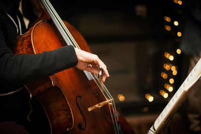
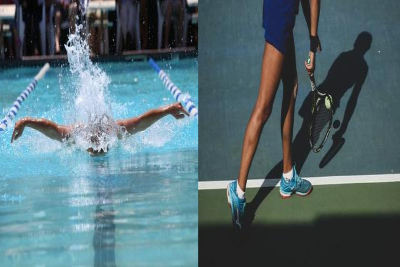

Hello! My name is Sakiya and I am a High School Student who loves to code. In my free time you can catch me spending hours learning a new coding language, I am just recently learning SQL and have been in Girls Who Code since middle school.
I also enjoy playing my cello, as much, if not more than I like to code. I've only been playing for 3 years but it's a little easier since I played the violin for 5 years.
Since I spend most of my time indoors I often participate in school athletics like the tennis and swim team. I've been doing both sports since my freshman year and I plan to continue playing tennis in college.